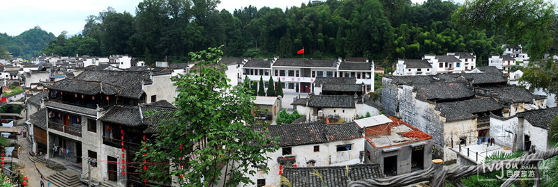

李坑是一个以李姓聚居为主的古村落，距婺源县城12公里。李坑的建筑风格独特，是著名的徽派建筑。给人一种安静、祥和的气氛。李坑自古文风鼎盛、人才辈出。村落群山环抱，山清水秀，风光旖旎。村中明清古建遍布、民居宅院沿溪而建，依山而立，粉墙黛瓦、参差错落；村内街巷溪水贯通、九曲十弯；青石板道纵横交错，石、木、砖各种溪桥数十座沟通两岸，更有两涧清流、柳碣飞琼、双桥叠锁、焦泉浸月、道院钟鸣、仙桥毓秀等景点在其中，构筑了一幅小桥、流水、人家的美丽画卷，是婺源精品线上的一颗灿烂的明珠。 如果时间允许的话，不妨在李坑吃上一顿富有农家特色的菜肴：李坑炙肉和花菇石鸡是一定要常的，再配上李坑糯米酒，这一趟的李坑之行就算是圆满了。运气好的话，还可以看到傩戏表演的盛大场面，表演时间不太固定，可以在前往的路上向当地司机询问。